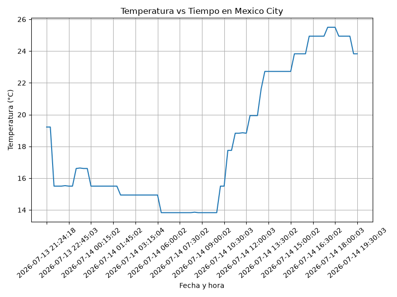
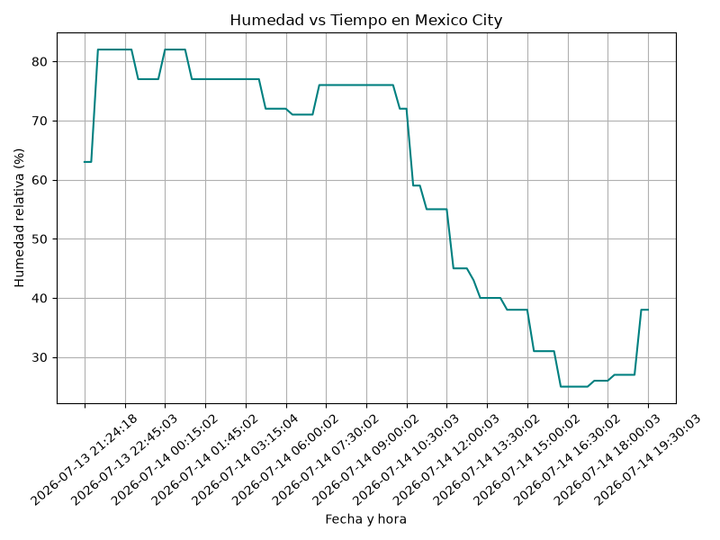
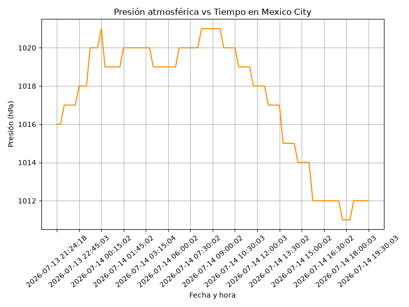

Proyecto ICCD332: City Weather APP - Ciudad de México
1. Navegación
2. City Weather APP
Este es el proyecto de fin de semestre en donde se demuestran las destrezas obtenidas durante el transcurso de la asignatura de Arquitectura de Computadores:
- Conocimientos de sistema operativo Linux
- Conocimientos de Emacs/Jupyter
- Configuración de Entorno para Data Science con Mamba/Anaconda
- Literate Programming
La ciudad objeto de estudio del Grupo 3 es Ciudad de México (lat: 19.4326, lon: -99.1332).
2.1. Estructura del proyecto
El proyecto se creó en el home del sistema operativo, en la carpeta MexicoWeather:
pwd
/home/anthonio/MexicoWeather/weather-site/content
Estructura de archivos y subdirectorios del proyecto:
.
├── clima-mexico-hoy.csv
├── Datos_de_Seguridad_Ecuador.xlsx
├── get-weather.sh
├── main.py
├── output.log
└── weather-site
├── build.sh
├── build-site.el
├── content
│ ├── ieee754.org
│ ├── images
│ │ ├── humidity.png
│ │ ├── pressure.png
│ │ ├── robo_domicilio_anual.png
│ │ ├── robo_domicilio_provincias.png
│ │ └── temperature.png
│ ├── #index.org#
│ ├── index.org
│ └── seguridad.org
└── public
├── ieee754.html
├── images
│ ├── robo_domicilio_anual.png
│ └── robo_domicilio_provincias.png
├── index .html
└── seguridad.html
6 directories, 21 files
2.2. Formulación del Problema
Se desea realizar un registro climatológico de la Ciudad de México \(\mathcal{C}\). Para esto, se escribió un script de Python que permite obtener datos climatológicos desde el API de openweathermap. El API hace uso de los valores de latitud \(x\) y longitud \(y\) de la ciudad \(\mathcal{C}\) para devolver los valores actuales a un tiempo \(t\).
Los resultados obtenidos de la consulta al API se escriben en el archivo clima-mexico-hoy.csv. Cada ejecución del script almacena nuevos datos en el archivo. Se utiliza crontab para obtener datos con una periodicidad de 15 minutos mediante la ejecución del archivo ejecutable get-weather.sh, respaldando la salida en output.log.
2.3. Descripción del código
La estrategia de solución se divide en tres unidades funcionales: (1) consulta al API, (2) normalización del JSON anidado a columnas planas, y (3) escritura incremental al CSV.
2.3.1. Lectura del API
La función get_weather consulta el endpoint Current Weather con
las coordenadas de la ciudad y devuelve la respuesta JSON como un
diccionario de Python:
def get_weather(lat, lon, api_key): """Consulta el API de OpenWeatherMap y devuelve el JSON como dict. Docs: https://openweathermap.org/current""" url = "https://api.openweathermap.org/data/2.5/weather" params = {"lat": lat, "lon": lon, "appid": api_key, "units": "metric"} response = requests.get(url, params=params, timeout=30) return response.json()
2.3.2. Convertir JSON a columnas planas
El JSON del API contiene diccionarios anidados (main, wind, sys)
y listas (weather). La función recursiva flatten los convierte en
claves planas con separador _ (ej: main.temp → main_temp). Esto
garantiza que toda la información del API quede en columnas, como
exige el enunciado. Los campos rain y snow, que solo aparecen
cuando existe el fenómeno, están declarados en la lista fija
FIELDNAMES, de modo que el CSV siempre tiene las mismas columnas y
quedan vacíos cuando el API no los envía:
def flatten(data, parent_key=""): """Aplana un diccionario anidado usando '_' como separador.""" items = {} for key, value in data.items(): new_key = f"{parent_key}_{key}" if parent_key else key if isinstance(value, dict): items.update(flatten(value, new_key)) elif isinstance(value, list): for i, elem in enumerate(value): if isinstance(elem, dict): items.update(flatten(elem, f"{new_key}_{i}")) else: items[f"{new_key}_{i}"] = elem else: items[new_key] = value return items
2.3.3. Guardar el archivo csv
La función write2csv agrega una fila por ejecución y escribe el
encabezado únicamente si el archivo aún no existe:
def write2csv(data_dict, csv_filename): file_exists = os.path.isfile(csv_filename) with open(csv_filename, "a", newline="") as f: writer = csv.DictWriter(f, fieldnames=FIELDNAMES) if not file_exists: writer.writeheader() writer.writerow(data_dict)
2.4. Script ejecutable sh
Ubicación del intérprete de shell y del entorno mamba iccd332 utilizado:
which bash
/usr/bin/bash
which mamba
/home/anthonio/miniforge3/condabin/mamba
Contenido del ejecutable get-weather.sh. Se usa #!/bin/bash (y no
sh~/dash, que no dispone del comando ~source), se activa el entorno
iccd332 y la API key se pasa como variable de entorno para no
exponerla en el código fuente:
#!/bin/bash cd "$(dirname "$0")" || exit 1 source "/home/anthonio/miniforge3/etc/profile.d/conda.sh" eval "$(conda shell.bash hook)" conda activate iccd332 export OWM_API_KEY="********" python main.py
El script se convirtió en ejecutable con:
chmod +x get-weather.sh
2.5. Configuración de Crontab
Configuración realizada en crontab para la adquisición de datos cada 15 minutos:
*/15 * * * * /home/anthonio/MexicoWeather/get-weather.sh >> /home/anthonio/MexicoWeather/output.log 2>&1
*/15ejecuta el script cada 15 minutos.>>agrega la salida al final de output.log (lo crea si no existe).2>&1redirige también los errores al mismo archivo de log.
Verificación de la ejecución automática en output.log:
cd ../..
tail -n 5 output.log
===== Mexico-Clima | Grupo 3 ICCD332 ===== [OK] Dato guardado: 2026-07-14 19:15:03 | Mexico City | temp=23.83C | few clouds ===== Mexico-Clima | Grupo 3 ICCD332 ===== [OK] Dato guardado: 2026-07-14 19:30:03 | Mexico City | temp=23.83C | few clouds
3. Presentación de resultados
Para la presentación de resultados se utilizan las librerías de Python pandas y matplotlib, instaladas en el entorno iccd332.
3.1. Muestra Aleatoria de datos
Se presenta una muestra de 10 valores aleatorios de los datos obtenidos. Primero se verifica la estructura del DataFrame (filas x columnas):
import pandas as pd df = pd.read_csv('/home/anthonio/MexicoWeather/clima-mexico-hoy.csv') print(df.shape)
(85, 35)
table1 = df.sample(10) table = [list(table1)]+[None]+table1.values.tolist()
| fechaconsulta | coordlon | coordlat | weather0id | weather0main | weather0description | weather0icon | base | maintemp | mainfeelslike | maintempmin | maintempmax | mainpressure | mainhumidity | mainsealevel | maingrndlevel | visibility | windspeed | winddeg | windgust | rain1h | rain3h | snow1h | snow3h | cloudsall | dt | systype | sysid | syscountry | syssunrise | syssunset | timezone | id | name | cod |
|---|---|---|---|---|---|---|---|---|---|---|---|---|---|---|---|---|---|---|---|---|---|---|---|---|---|---|---|---|---|---|---|---|---|---|
| 2026-07-14 00:00:03 | -99.1332 | 19.4326 | 804 | Clouds | overcast clouds | 04n | stations | 16.61 | 16.34 | 16.61 | 16.61 | 1020 | 77 | 1020 | 766 | 10000 | 3.58 | 310 | nan | nan | nan | nan | nan | 89 | 2026-07-13 23:53:26 | 2.0 | 47729.0 | MX | 2026-07-13 07:05:48 | 2026-07-13 20:18:22 | -21600 | 3530597 | Mexico City | 200 |
| 2026-07-14 11:00:02 | -99.1277 | 19.4285 | 802 | Clouds | scattered clouds | 03d | stations | 17.75 | 17.12 | 17.75 | 17.75 | 1019 | 59 | 1019 | 766 | 10000 | 1.67 | 52 | 0.96 | nan | nan | nan | nan | 41 | 2026-07-14 10:50:40 | 2.0 | 47729.0 | MX | 2026-07-14 07:06:09 | 2026-07-14 20:18:11 | -21600 | 3530597 | Mexico City | 200 |
| 2026-07-14 10:45:02 | -99.1294 | 19.4287 | 802 | Clouds | scattered clouds | 03d | stations | 17.75 | 17.12 | 17.75 | 17.75 | 1019 | 59 | 1019 | 766 | 10000 | 1.67 | 52 | 0.96 | nan | nan | nan | nan | 41 | 2026-07-14 10:44:38 | 2.0 | 47729.0 | MX | 2026-07-14 07:06:09 | 2026-07-14 20:18:12 | -21600 | 3530597 | Mexico City | 200 |
| 2026-07-14 16:30:02 | -99.1332 | 19.4326 | 800 | Clear | clear sky | 01d | stations | 24.94 | 24.14 | 24.94 | 24.94 | 1012 | 25 | 1012 | 764 | 10000 | 2.68 | 100 | nan | nan | nan | nan | nan | 3 | 2026-07-14 16:26:10 | 2.0 | 47729.0 | MX | 2026-07-14 07:06:10 | 2026-07-14 20:18:13 | -21600 | 3530597 | Mexico City | 200 |
| 2026-07-14 13:15:02 | -99.1332 | 19.4326 | 802 | Clouds | scattered clouds | 03d | stations | 22.72 | 22.09 | 22.72 | 22.72 | 1017 | 40 | 1017 | 766 | 10000 | 1.79 | 60 | nan | nan | nan | nan | nan | 32 | 2026-07-14 13:05:20 | 2.0 | 47729.0 | MX | 2026-07-14 07:06:10 | 2026-07-14 20:18:13 | -21600 | 3530597 | Mexico City | 200 |
| 2026-07-14 08:45:03 | -99.1332 | 19.4326 | 803 | Clouds | broken clouds | 04d | stations | 13.83 | 13.25 | 13.83 | 13.83 | 1021 | 76 | 1021 | 767 | 10000 | 1.79 | 90 | nan | nan | nan | nan | nan | 56 | 2026-07-14 08:42:49 | 2.0 | 47729.0 | MX | 2026-07-14 07:06:10 | 2026-07-14 20:18:13 | -21600 | 3530597 | Mexico City | 200 |
| 2026-07-14 08:30:02 | -99.1277 | 19.4285 | 803 | Clouds | broken clouds | 04d | stations | 13.86 | 13.29 | 13.86 | 13.86 | 1021 | 76 | 1021 | 766 | 10000 | 1.79 | 90 | nan | nan | nan | nan | nan | 70 | 2026-07-14 08:21:17 | 2.0 | 47729.0 | MX | 2026-07-14 07:06:09 | 2026-07-14 20:18:11 | -21600 | 3530597 | Mexico City | 200 |
| 2026-07-14 00:15:02 | -99.1332 | 19.4326 | 804 | Clouds | overcast clouds | 04n | stations | 15.5 | 15.25 | 15.5 | 15.5 | 1021 | 82 | 1021 | 766 | 10000 | 1.79 | 320 | nan | nan | nan | nan | nan | 89 | 2026-07-14 00:05:02 | 2.0 | 47729.0 | MX | 2026-07-13 07:05:48 | 2026-07-13 20:18:22 | -21600 | 3530597 | Mexico City | 200 |
| 2026-07-13 21:24:18 | -99.1332 | 19.4326 | 500 | Rain | light rain | 10n | stations | 19.22 | 18.84 | 19.22 | 19.22 | 1016 | 63 | 1016 | 765 | 10000 | 0.79 | 179 | 1.48 | 0.4 | nan | nan | nan | 89 | 2026-07-13 21:14:35 | nan | nan | MX | 2026-07-13 07:05:48 | 2026-07-13 20:18:22 | -21600 | 3530597 | Mexico City | 200 |
| 2026-07-13 22:15:04 | -99.1332 | 19.4326 | 500 | Rain | light rain | 10n | stations | 15.5 | 15.25 | 15.5 | 15.5 | 1017 | 82 | 1017 | 766 | 10000 | 2.68 | 280 | nan | 0.48 | nan | nan | nan | 95 | 2026-07-13 22:10:19 | 2.0 | 47729.0 | MX | 2026-07-13 07:05:48 | 2026-07-13 20:18:22 | -21600 | 3530597 | Mexico City | 200 |
3.2. Gráfica Temperatura vs Tiempo
import matplotlib.pyplot as plt fig = plt.figure(figsize=(8,6)) plt.plot(df['fecha_consulta'], df['main_temp']) plt.grid() plt.title(f'Temperatura vs Tiempo en {next(iter(set(df.name)))}') plt.xlabel('Fecha y hora') plt.ylabel('Temperatura (°C)') # mostrar 1 de cada 6 etiquetas del eje x para que no se encimen ax = plt.gca() ax.set_xticks(ax.get_xticks()[::6]) plt.xticks(rotation=40) fig.tight_layout() fname = './images/temperature.png' plt.savefig(fname) fname

3.3. Gráfica de Humedad con respecto al tiempo
fig = plt.figure(figsize=(8,6)) plt.plot(df['fecha_consulta'], df['main_humidity'], color='teal') plt.grid() plt.title(f'Humedad vs Tiempo en {next(iter(set(df.name)))}') plt.xlabel('Fecha y hora') plt.ylabel('Humedad relativa (%)') ax = plt.gca() ax.set_xticks(ax.get_xticks()[::6]) plt.xticks(rotation=40) fig.tight_layout() fname = './images/humidity.png' plt.savefig(fname) fname

3.4. Opcional: Gráfica de interés (Presión atmosférica)
fig = plt.figure(figsize=(8,6)) plt.plot(df['fecha_consulta'], df['main_pressure'], color='darkorange') plt.grid() plt.title(f'Presión atmosférica vs Tiempo en {next(iter(set(df.name)))}') plt.xlabel('Fecha y hora') plt.ylabel('Presión (hPa)') ax = plt.gca() ax.set_xticks(ax.get_xticks()[::6]) plt.xticks(rotation=40) fig.tight_layout() fname = './images/pressure.png' plt.savefig(fname) fname

4. Referencias
- API OpenWeatherMap - Current Weather Data
- Documentación de csv.DictWriter - Python
- Librería requests - Quickstart
- Aplanar diccionarios anidados - StackOverflow
- Activar conda desde un script bash - StackOverflow
- Presentar DataFrame como tabla en org-babel
- Python Source Code Blocks in Org Mode
- System Crafters: Publishing Websites with Org Mode